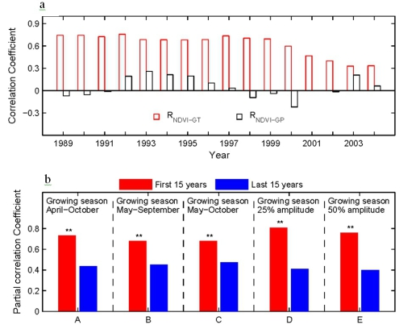
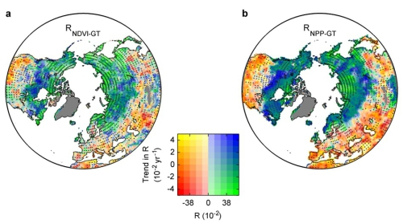

科学问题：植被生长对气候变化的响应是全球变化研究的核心内容之一。目前学界普遍认为北半球植被生长主要受温度的限制，气候变暖是近几十年北半球植被生产力增加的主要原因之一。值得注意的是，植被生长还受其他环境要素如水分的制约，同时植物生理过程（如光合作用和自养呼吸等过程）对气候变暖产生适应，因此植被对全球变暖的响应可能随时间而发生变化。然而，由于缺乏长期观测数据的印证，目前人们对植被生长与气候变化关系的动态变化了解甚少。
研究目标：利用卫星遥感获取的归一化差值植被指数（NDVI）、10种不同的生态系统过程模型以及气象观测数据，卓越中心朴世龙教授及其合作研究团队系统地分析了过去30年全球气候变化背景下，北半球植被对全球变暖响应的时空变化。
主要认识和结论： 1982-2011年期间北半球植被生产力与温度的相关关系显著地降低，表现为上世纪80年代和90年代中期气候变暖显著促进北半球植被生产力，但最近15年其关系并不显著（图1）。模型模拟结果表明，气候变化是导致植被生产力与温度关系下降的主要原因，而大气CO2浓度上升等因素的贡献相对较少。干旱和降水量下降是导致温带地区植被生产力与温度相关关系下降的主要原因；而60°N以北的寒带地区的下降与极端事件的增加以及植被生长对温度变化的适应有关（图2）。进一步的分析表明，高纬地区植被生产力与温度的关系在温暖年份显著低于寒冷年份，而且温暖年份的下降趋势比寒冷年份更为显著。在地球“第三极”的青藏高原地区，过去30年来，植被生长对温度变化的响应并没有显现出明显的动态变化规律，与北半球高纬地区植被并不一致，需要进一步分析。
这一成果阐明了植被生长对温度变化的非线性响应，将有助于了解气候变化对北半球植被影响及其机制，改变了人们长期以来普遍认为的“本世纪气候持续变暖会进一步促进植被生长，并吸收更多的CO2”的观点。
论文链接:http://www.nature.com/ncomms/2014/141016/ncomms6018/full/ncomms6018.html

图
1
，（
a
）过去
30
年北半球植被生长季（
4-10
月）
NDVI
和温度以及降水之间的相关系数（
RNDVI-GT
和
RNDVI-GP
）变化趋势。横轴表示研究时段的中心年份，如
1989
表示研究时段为
1982-1996
。（
b
）不同植被生长季定义下的
1982-1996
年和
1997-2011
年间
NDVI
和温度的相关系数。

图
2.
生长季温度与
(a)
遥感获取的
NDVI
和
(b)
模型模拟的植被生产力
(NPP)
的相关系数及其时间变化。在颜色图例中，横轴代表
1982-2011
年间温度与
NDVI
或
NPP
相关系数；纵轴表示
NDVI
或
NPP
与温度的相关系数的变化趋势。